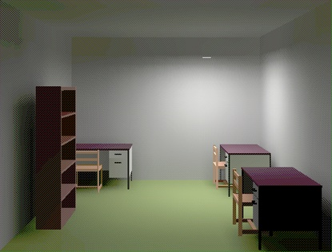

Per al càlcul del color d'un punt Q que pertany a una superfície S, els models transaccionals o de radiositat consideren els focus de llum com un objecte qualsevol de l'escena (no tenen perquè ser puntuals) i que els objectes només poden produir reflexions difoses pures i obstaculitzar part de la llum incident. Com totes les reflexions són difoses, la radiositat no considera la posició de l'observador donat que des de qualsevol posició en que el punt Q sigui visible (ho determinen algorismes de visibilitat) observarà el mateix color. Aquests algorismes poden modelar ombres i penombres (punts que reben parcialment la llum d'un focus no puntual), però no miralls ni transparències. Són els més costosos de càlcul i es basen en analitzar l'intercanvi d'energia (llum) entre tots els objectes de l'escena fins arribar a l'estat d'equilibri que determina el color de cada punt. Aquest model d'il·luminació es classifica com global donat que en el càlcul del color d'un punt Q consideren la globalitat de l'escena.
|  |
Per cadascun dels models d'il·luminació breument introduïts existeixen
diferents implementacions que permeten millorar la seva eficiència
computacional i la qualitat de la imatge obtinguda, és a dir,
incrementar el seu realisme considerant en major o menor grau la
transmissió real de la llum (per exemple existeixen mètodes híbrids
que permeten introduir reflexions especulars en tècniques de
radiositat).